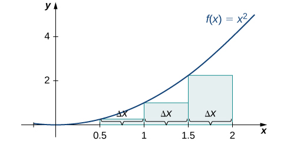
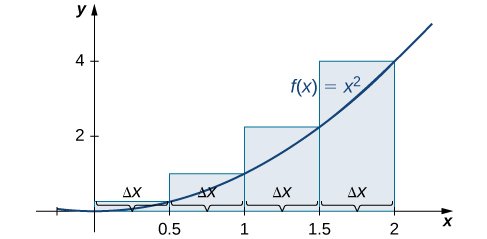

Archimedes was fascinated with calculating the areas of various shapes—in other words, the amount of space enclosed by the shape. He used a process that has come to be known as the method of exhaustion, which used smaller and smaller shapes, the areas of which could be calculated exactly, to fill an irregular region and thereby obtain closer and closer approximations to the total area. In this process, an area bounded by curves is filled with rectangles, triangles, and shapes with exact area formulas. These areas are then summed to approximate the area of the curved region. This approach extends a basic idea from elementary geometry. A geometrical region can be decomposed or partitioned into simpler subregions, and the area of the whole region is the sum of the areas of the subregions.
In this section, we develop techniques to approximate the area between a curve, defined by a function \(f(x),\) and the \(x\)-axis on a closed interval \([a,b].\) Like Archimedes, we first approximate the area under the curve using shapes of known area (namely, rectangles for simplicity). By using smaller and smaller rectangles, we get closer and closer approximations to the area. Taking a limit allows us to calculate the exact area under the curve.
Let’s start by introducing some notation to make the calculations easier. We then consider the case when \(f(x)\) is continuous and nonnegative. Later in the chapter, we relax some of these restrictions and develop techniques that apply in more general cases.
As mentioned, we will use shapes of known area to approximate the area of an irregular region bounded by curves. This process requires adding up long strings of numbers. To make it easier to write down these lengthy sums, we look at some new notation here, called sigma notation (also known as summation notation). The Greek capital letter \(\displaystyle\sum,\) sigma, is used to express long sums of values in a compact form. For example, if we want to add all the integers from 1 to 10 without sigma notation, we have to write
where \(a_i\) describes the terms to be added, and the variable \(i\) is called the index. Each term is evaluated, then we sum all the values, beginning with the value when \(i=1\text{,}\) indicated below the sigma symbol, and ending with the value when \(i=n\text{,}\) indicated above the sigma symbol. For example, an expression like
Note that the index is used only to keep track of the terms to be added; it does not factor into the calculation of the sum itself. The index is therefore called a dummy variable. We can use any letter we like for the index. Typically, variables for indices include \(i\text{,}\)\(j\text{,}\) and \(k\text{.}\)
Let \(n\) be a positive integer. Let \(a_1,a_2 , \dots , a_n\) and \(b_1,b_2 , \dots , b_n\) be real numbers and let \(c\) be a constant. The following properties hold for all positive integers \(m\text{,}\) with \(1\leq m\leq n.\)
With sigma notation, we return to the problem of approximating the area under a curve. Let \(f(x)\) be a continuous, nonnegative function defined on the closed interval \([a,b].\) We want to approximate the area \(A\) bounded by \(f(x)\) above, the \(x\)-axis below, the line \(x=a\) on the left, and the line \(x=b\) on the right (Figure 5.1.5).
Figure5.1.5.An area (shaded region) bounded by the curve \(f(x)\) at top, the \(x\)-axis at bottom, the line \(x=a\) to the left, and the line \(x=b\) at right.
How do we approximate the area under this curve? The approach is a geometric one. By dividing a region into many small shapes that have known area formulas, we can sum these areas and obtain a reasonable estimate of the true area.
There are many ways we could divide the region, and we will explore several of these options in the discussion that follows. For now, we construct a first approximation by dividing the interval \([a,b]\) into \(n\) subintervals of equal width. This is called a regular partition of the interval \([a, b]\text{.}\)
The lenth of the interval \([a, b]\) is \(b-a\text{.}\) Because we are dividing the interval into \(n\) equal-sized subintervals, each subinterval has length \(\Delta x=\dfrac{b-a}{n}.\) We do this by selecting equally spaced points \(x_0,x_1,x_2 , \dots , x_n\text{,}\) called partition points with \(x_0=a\text{,}\)\(x_n=b,\) and where the distance between two conseutive partition points is
We can use this regular partition as the basis of a method for estimating the area under the curve. We next examine two methods: the left-endpoint regular approximation and the right-endpoint regular approximation. Using the regular partition \(a=x_0, x_1, x_2, \dots , x_{n-1}, x_n=b\text{,}\) each subinterval \([x_{i-1}, x_i]\) will serve as the base of a rectangle, with width \(\Delta x = \dfrac{b-a}{n}\text{.}\) All that remains is to determine the height of each approximating rectangle.
On each subinterval \([x_{i-1} ,x_i]\) (for \(i=1,2,3 , \dots , n),\) construct a rectangle with width \(\Delta x \) and height equal to \(f(x_{i-1} ),\) which is the function value at the left endpoint of the subinterval. Then the area of this rectangle is \(f(x_{i-1} )\Delta x .\) Adding the areas of all these rectangles, we get an approximate value for \(A\) (Figure 5.1.7). We use the notation \(L_n \) to denote that this is a left-endpoint approximation of \(A\) using \(n\) equal subintervals.
\begin{align*}
A\approx L_n\amp =f(x_0)\Delta x +f(x_1)\Delta x + \cdots +f(x_{n-1} )\Delta x \\
\amp=\displaystyle{ \sum_{i=1}^{n} f(x_{i-1} )\Delta x }
\end{align*}
Figure5.1.7.In the left-endpoint approximation of area under a curve, the height of each rectangle is determined by the function value at the left of each subinterval.
The second method for approximating area under a curve is the right-endpoint approximation. As before, each subinterval \([x_{i-1}, x_i]\) will serve as the base of a rectangle, but now the heights of the rectangles are determined by the function values at the right endpoint of each subinterval.
On each subinterval \([x_{i-1} ,x_i],\) construct a rectangle with width \(\Delta x \) and height equal to \(f(x_i ),\) which is the function value at the right endpoint of the subinterval. Then, the area of each rectangle is \(f(x_i)\Delta x \) and the approximation for \(A\) is given by
\begin{align*}
A\approx R_n\amp =f(x_1)\Delta x +f(x_2)\Delta x + \cdots +f(x_n)\Delta x \\
\amp=\displaystyle{ \sum_{i=1}^{n} f(x_i)\Delta x }.
\end{align*}
The notation \(R_n\) indicates this is a right-endpoint approximation for \(A\) (Figure 5.1.9).
Figure5.1.9.In the right-endpoint approximation of area under a curve, the height of each rectangle is determined by the function value at the right of each subinterval. Note that the right-endpoint approximation differs from the left-endpoint approximation in Figure 5.1.7.
The graphs in Figure 5.1.10 represent the curve \(f(x)=\dfrac{x^2}{2}.\) In graph (a) we divide the region represented by the interval \([0,3]\) into six subintervals, each of width \(0.5\text{.}\) Thus, \(\Delta x =0.5\text{.}\) The intervals are \([0,0.5],[0.5,1],[1,1.5],[1.5,2],[2,2.5],[2.5,3]\text{.}\) We then form six rectangles by drawing vertical lines perpendicular to the \(x\)-axis from the point \((x_{i-1},0)\text{,}\) the left endpoint of each subinterval to the corresponding point \((x_{i-1}, f(x_{i-1}))\) on the graph of \(f\text{.}\) The height of each rectangle is thus \(f(x_{i-1} )\) for \(i=1,2,3,4,5,6.\) We find the area of each rectangle by multiplying the height by the width. Then, the sum of the rectangular areas approximates the area between \(f(x)\) and the \(x\)-axis. Because the left endpoints are used to calculate height, we are constructing a left-endpoint approximation. Thus,
\begin{align*}
A\approx L_6\amp =\displaystyle{ \sum_{i=1}^{6} f(x_{i-1} )\Delta x }=f(x_0)\Delta x +f(x_1)\Delta x +f(x_2)\Delta x +f(x_3)\Delta x +f(x_4)\Delta x +f(x_5)\Delta x \\
\amp=f(0)0.5+f(0.5)0.5+f(1)0.5+f(1.5)0.5+f(2)0.5+f(2.5)0.5\\
\amp =(0)0.5+(0.125)0.5+(0.5)0.5+(1.125)0.5+(2)0.5+(3.125)0.5\\
\amp =0+0.0625+0.25+0.5625+1+1.5625\\
\amp =3.4375.
\end{align*}
Figure5.1.10.Methods of approximating the area under a curve by using (a) the left endpoints and (b) the right endpoints.
In Figure 5.1.10(b), we draw vertical lines perpendicular to the \(x\)-axis from the point \((x_{i},0)\text{,}\) the right endpoint of each subinterval to the corresponding point \((x_{i-1}, f(x_{i-1}))\) on the graph of \(f\text{.}\) The height of each rectangle is thus \(f(x_{i} )\) for \(i=1,2,3,4,5,6\text{.}\) We multiply each \(f(x_i)\) by \(\Delta x \) to find the rectangular areas, and then add them. This is a right-endpoint approximation of the area under \(f(x).\) Thus,
\begin{align*}
A\approx R_6\amp =\displaystyle{ \sum_{i=1}^{6} f(x_i)\Delta x }=f(x_1)\Delta x +f(x_2)\Delta x +f(x_3)\Delta x +f(x_4)\Delta x +f(x_5)\Delta x +f(x_6)\Delta x \\
\amp =f(0.5)0.5+f(1)0.5+f(1.5)0.5+f(2)0.5+f(2.5)0.5+f(3)0.5\\
\amp =(0.125)0.5+(0.5)0.5+(1.125)0.5+(2)0.5+(3.125)0.5+(4.5)0.5\\
\amp =0.0625+0.25+0.5625+1+1.5625+2.25\\
\amp =5.6875.
\end{align*}
Example5.1.11Approximating the Area Under a Curve.
Use both left-endpoint and right-endpoint approximations to approximate the area under the curve of \(f(x)=x^2\) on the interval \([0,2];\) use \(n=4.\)
\begin{gather*}
\Delta x =\frac{(2-0)}{4}=0.5.
\end{gather*}
The intervals \([0,0.5],[0.5,1],[1,1.5],[1.5,2]\) are shown in Figure 5.1.12. Using a left-endpoint approximation, the heights of the approximating rectangles are \(f(0)=0,f(0.5)=0.25,f(1)=1,f(1.5)=2.25.\) Then,
\begin{align*}
L_4\amp =f(x_0)\Delta x +f(x_1)\Delta x +f(x_2)\Delta x +f(x_3)\Delta x \\
\amp =0(0.5)+0.25(0.5)+1(0.5)+2.25(0.5)\\
\amp =1.75.
\end{align*}

Figure5.1.12.The graph shows the left-endpoint approximation of the area under \(f(x)=x^2\) from 0 to 2.
The right-endpoint approximation is shown in Figure 5.1.13. The intervals are the same, \(\Delta x =0.5,\) but now use the right endpoint to calculate the height of the approximating rectangles. We have
\begin{align*}
R_4\amp =f(x_1)\Delta x +f(x_2)\Delta x +f(x_3)\Delta x +f(x_4)\Delta x \\
\amp =0.25(0.5)+1(0.5)+2.25(0.5)+4(0.5)\\
\amp =3.75.
\end{align*}

Figure5.1.13.The graph shows the right-endpoint approximation of the area under \(f(x)=x^2\) from 0 to 2.
We have constructed area approximations for regions bounded by graphs of functions using rectangles. Rectangles are a convenient choice because they have a known area formula that requires only two measurements. We can obtain the width measurement from the regular partition of \([a, b]\) into \(n\) rectangles. The height of the rectangles are obtained from specific function values. Unfortunately, rectangles are made of straight line segments, and we are usually trying to approximate ares of regions that are not made up of straight line segments. Looking at Figure 5.1.10 and the graphs in Example 5.1.11, we can see that when we use a small number of intervals, neither the left-endpoint approximation nor the right-endpoint approximation is a particularly accurate estimate of the area under the curve. However, it seems reasonable to suspect that if we increase the number of points in our partition, our estimate of \(A\) will improve. Each rectangle will be thinner, so we will be able to fit the rectangles to the curve more precisely. The expense of doing this, however, is the need to include many more terms in the approximating sums.
We can demonstrate the improved approximation obtained through smaller intervals with an example. Let’s explore the idea of increasing \(n\text{,}\) first in a left-endpoint approximation with four rectangles, then eight rectangles, and finally 32 rectangles. Then, let’s do the same thing in a right-endpoint approximation, using the same sets of intervals, of the same curved region. Figure 5.1.15 shows the area of the region under the curve \(f(x)=(x-1)^3+4\) on the interval \([0,2]\) using a left-endpoint approximation where \(n=4.\) The width of each rectangle is
Figure5.1.15.With a left-endpoint approximation and dividing the region from \(a\) to \(b\) into four equal intervals, the area under the curve is approximately equal to the sum of the areas of the rectangles.
Figure 5.1.16 shows the same curve divided into eight subintervals. Comparing the graph with four rectangles in Figure 5.1.15 with this graph with eight rectangles, we can see there appears to be less white space under the curve when \(n=8.\) This white space is area under the curve we are unable to include using our approximation. The area of the rectangles is
The graph in Figure 5.1.17 shows the same function with 32 rectangles inscribed under the curve. There appears to be little white space left. The area occupied by the rectangles is
We can carry out a similar process for the right-endpoint approximation method. A right-endpoint approximation of the same curve, using four rectangles (Figure 5.1.18), yields an area
Dividing the region over the interval \([0,2]\) into eight rectangles results in \(\Delta x =\frac{2-0}{8}=0.25.\) The graph is shown in Figure 5.1.19. The area is
Based on these figures and calculations, it appears we are on the right track; the rectangles appear to approximate the area under the curve better as \(n\) gets larger. Furthermore, as \(n\) increases, both the left-endpoint and right-endpoint approximations appear to approach an area of 8 square units. Table 5.1.21 shows a numerical comparison of the left- and right-endpoint methods. The idea that the approximations of the area under the curve get better and better as \(n\) gets larger and larger is very important, and we now explore this idea in more detail.
So far we have been using rectangles to approximate the area under a curve. The heights of these rectangles have been determined by evaluating the function at either the right or left endpoints of the subinterval \([x_{i-1} ,x_i].\) In reality, there is no reason to restrict evaluation of the function to one of these two points only. We could evaluate the function at any point \(x_i^*\) in the subinterval \([x_{i-1} ,x_i],\) and use \(f(x_i^*)\) as the height of our rectangle. This gives us an estimate for the area of the form
be a regular partition of \([a,b]\text{.}\) Let \(\Delta x \) be the width of each subinterval \([x_{i-1},x_i]\) and for each \(i\text{,}\) let \(x_i^*\) be any point in \([x_{i-1} ,x_i].\) The Riemann sum for \(f(x)\) on \([a, b]\) with regular partition \(x_0\lt x_1\lt x_2\lt \cdots \lt x_n\) and evaluation points \(x_i^*\) is
The Regular Riemann sum definition above depends on the partition and the choice of evaluation points wtihin each subinterval. Changing either of these produces a new Regular Riemann sum for \(f(x)\) on \([a, b]\text{.}\) Recall that with the left- and right-endpoint approximations, the estimates \(L_n\) and \(R_n\) appear to become closer approximations of the area \(A\) under \(y=f(x)\) and above the \(x\)-axis as \(n\) gets larger. Regular Riemann sums give better approximations for larger values of \(n\text{.}\) We are now ready to define the area under a curve in terms of Riemann sums.
Let \(f(x)\) be a continuous, nonnegative function on an interval \([a,b],\) and let \(\displaystyle{ \sum_{i=1}^{n} f(x_i^*)\Delta x }\) be a regular Riemann sum for \(f(x).\) Then, the area under the curve \(y=f(x)\) on \([a,b]\) is given by
Some subtleties here are worth discussing. First, note that taking the limit of a regular Riemann sum is different from finding a limit at infinity of a function \(f(x)\text{.}\) Limits of sums are discussed in detail in the chapter on Sequences and Series; however, for now we can safely assume that the computational techniques we used to compute limits of functions can also be used to calculate limits of sums.
Second, we must consider what to do if the expression converges to different limits for different choices of \({x_i^*}.\) Fortunately, this does not happen. Although the proof is beyond the scope of this text, when \(f(x)\) is continuous on the closed interval \([a,b],\) then \(\displaystyle{\lim_{n\to \infty } \sum_{i=1}^{n} f(x_i^* )\Delta x }\) exists and is independent of the choice of \({x_i^*}\text{ ). }\)
We look at some examples shortly. But, before we do, let’s take a moment and talk about some specific choices for \({x_i^*}.\) Although any choice for \({x_i^*}\) gives us an estimate of the area under the curve, we don’t necessarily know whether that estimate is too high (overestimate) or too low (underestimate). If it is important to know whether our estimate is high or low, we can select our value for \({x_i^* }\) to guarantee one result or the other, thanks to the Extreme Value Theorem for continuous functions on closed intervals.
For example, if we want to guarantee that a regular Riemann sum overestimates the area under the curve, we can choose \({x_i^* }\) such that for \(i=1,2,3 , \dots , n,f(x_i^* )\geq f(x)\) for all \(x\) in \([x_{i-1} ,x_i].\) In other words, we choose \(x_i^*\) so that for \(i=1,2,3, \dots , n\text{,}\)\(f(x_i^*)\) is the maximum function value on the interval \([x_{i-1}, x_i]\) (remember that the Extreme Value Theorem guarantees that at least one choice for \(x_i^*\) exists.)
If we select \(x_i^*\) in this way, then the Riemann sum \(\displaystyle{\sum_{i=1}^{n} f(x_i^* )\Delta x }\) is called an upper sum. If we instead want to guarantee that a regular Riemann sum underestimates the area under the curve, we can choose \({x_i^* }\) so that for \(i=1,2,3, \dots , n\text{,}\)\(f(x_i^*)\) is the minimum function value on the interval \([x_{i-1} ,x_i].\) In this case, the associated Riemann sum is called a lower sum. Note that in the special cases where \(f(x)\) is either increasing or decreasing on the interval \([a,b],\) then the maximum and minimum values of the function occur at the endpoints of the subintervals, so the upper and lower sums are just the same as the left- and right-endpoint approximations.
With \(n=4\) over the interval \([1,2]\text{,}\)\(\Delta x =\dfrac{1}{4}.\) We can list the intervals as \([1,1.25],[1.25,1.5],[1.5,1.75],[1.75,2].\) Observe that \(f'(x)=-2x\text{,}\) so \(f'(x)\lt 0\) for all \(1\leq x \leq 2\text{.}\) Therefore \(f\) is decreasing on \([1,2]\text{.}\) Because the function is decreasing over the interval \([1,2],\)Figure 5.1.25 shows that a lower sum is obtained by using the right endpoints.
Figure5.1.25.The graph of \(f(x)=10-x^2\) is set up for a right-endpoint approximation of the area bounded by the curve and the \(x\)-axis on \([1,2],\) and it shows a lower sum.
The intervals are \(\left[0,\frac{\pi}{12}\right],\left[\frac{\pi}{12},\frac{\pi}{6}\right],\left[\frac{\pi}{6},\frac{\pi}{4}\right],\left[\frac{\pi}{4},\frac{\pi}{3}\right],\left[\frac{\pi}{3},\frac{5\pi}{12}\right],\) and \(\left[\frac{5\pi}{12},\frac{\pi}{2}\right].\) Note that \(f(x)=\sin x\) is increasing on the interval \(\left[0,\frac{\pi}{2}\right],\) so a left-endpoint approximation gives us the lower sum. A left-endpoint approximation is the Riemann sum \(\displaystyle{ \sum_{i=0}^{5} \sin (x_i)\left(\frac{\pi}{12}\right)}\) where \(x_i=\frac{i\pi}{12}\text{.}\) We have
For a continuous function defined over an interval \([a, b]\text{,}\) the process of dividing the interval into \(n\) equal parts, extending a rectangle to the graph of the function, calculating the areas of the series of rectangles, and then summing the areas yields an approximation of the area of that region.
Riemann sums are expressions of the form \(\displaystyle \sum_{i=1}^n f(x_i^*)\Delta x\text{,}\) and can be used to estimate the area under the curve \(y = f(x)\text{.}\) Left- and right-endpoint approximations are special kinds of Riemann sums where the values of \(\{x_i^*\}\) are chosen to be the left or right endpoints of the subintervals, respectively.
Riemann sums allow for much flexibility in choosing the set of points \(\{x_i^*\}\) at which the function is evaluated, often with an eye to obtaining a lower sum or an upper sum.
Suppose that \(\displaystyle \sum_{i=1}^{100} a_i = 15\) and \(\displaystyle \sum_{i=1}^{100} b_i = -12\text{.}\) In the following exercises, compute the sums.
Let \(L_n\) denote the left-endpoint sum using \(n\) subintervals and let \(R_n\) denote the corresponding right-endpoint sum. In the following exercises, compute the indicated left and right sums for the given functions on the indicated interval.
Compute the left and right Riemann sums—\(L_4\) and \(R_4\text{,}\) respectively—for \(f(x) = 2 - \lvert x \rvert\) on \([-2, 2]\text{.}\) Compute their average value and compare it with the area under the graph of \(f\text{.}\)
Compute the left and right Riemann sums—\(L_6\) and \(R_6\text{,}\) respectively—for \(f(x) = 3 - \lvert 3 - x \rvert\) on \([0, 6]\text{.}\) Compute their average value and compare it with the area under the graph of \(f\text{.}\)
Compute the left and right Riemann sums—\(L_4\) and \(R_4\text{,}\) respectively—for \(f(x) = \sqrt{4 - x^2}\) on \([-2, 2]\) and compare their values.
Compute the left and right Riemann sums—\(L_6\) and \(R_6\text{,}\) respectively—for \(f(x) = \sqrt{9 - (x - 3)^2}\) on \([0, 6]\) and compare their values.
In the following exercises, graph the function then use a calculator or a computer program to evaluate the following left and right endpoint sums. Is the area under the curve between the left and right endpoint sums?
\(R_{100} = 0.33835\text{,}\)\(L_{100} = 0.32835\text{.}\) The plot shows that the left Riemann sum is an underestimate because the function is increasing. Similarly, the right Riemann sum is an overestimate. The area lies between the left and right Riemann sums. Ten rectangles are shown for visual clarity. This behavior persists for more rectangles.
\(L_{100} = -0.02\text{,}\)\(R_{100} = 0.02\text{.}\) The left-endpoint sum is an underestimate because the function is increasing. Similarly, a right-endpoint approximation is an overestimate. The net signed area lies between the left- and right-endpoint estimates.
\(L_{100} = 3.555\text{,}\)\(R_{100} = 3.670\text{.}\) The plot shows that the left Riemann sum is an underestimate because the function is increasing. Ten rectangles are shown for visual clarity. This behavior persists for more rectangles.
Let \(t_j\) denote the time that it took Tejay van Garderen to ride the \(j\)th stage of the Tour de France in 2014. If there were a total of \(21\) stages, interpret \(\displaystyle \sum_{j=1}^{21} t_j\text{.}\)
Let \(d_j\) denote the hours of daylight and \(\delta_j\) denote the increase in the hours of daylight from day \(j - 1\) to day \(j\) in Fargo, North Dakota, on the \(j\)th day of the year. Interpret \(\displaystyle d_1 + \sum_{j=2}^{365} \delta_j\text{.}\)
To help get in shape, Joe gets a new pair of running shoes. If Joe runs \(1\) mi each day in week \(1\) and adds \(\frac{1}{10}\) mi to his daily routine each week, what is the total mileage on Joe’s shoes after \(25\) weeks?
The following table gives approximate values of the average annual atmospheric rate of increase in carbon dioxide (\(\text{CO}_2\)) each decade since 1960, in parts per million (ppm). Estimate the total increase in atmospheric \(\text{CO}_2\) between 1964 and 2013.
The following table gives the approximate increase in sea level in inches over \(20\) years starting in the given year. Estimate the net change in mean sea level from 1870 to 2010.
The following table gives the approximate increase in dollars in the average price of a gallon of gas per decade since 1950. If the average price of a gallon of gas in 2010 was \(\$2.60\text{,}\) what was the average price of a gallon of gas in 1950?
The following table gives the percent growth of the U.S. population beginning in July of the year indicated. If the U.S. population was \(281,421,906\) in July 2000, estimate the U.S. population in July 2010.
[T] Use a computer algebra system to compute the Riemann sum, \(L_N\text{,}\) for \(N = 10, 30, 50\) for \(f(x) = \sqrt{1 - x^2}\) on \([-1, 1]\text{.}\)
[T] Use a computer algebra system to compute the Riemann sum, \(L_N\text{,}\) for \(N = 10, 30, 50\) for \(f(x) = \dfrac{1}{\sqrt{1 + x^2}}\) on \([-1, 1]\text{.}\)
[T] Use a computer algebra system to compute the Riemann sum, \(L_N\text{,}\) for \(N = 10, 30, 50\) for \(f(x) = \sin^2 x\) on \([0, 2\pi]\text{.}\) Compare these estimates with \(\pi\text{.}\)
In the following exercises, use a calculator or a computer program to evaluate the endpoint sums \(R_N\) and \(L_N\) for \(N = 1, 10, 100\text{.}\) How do these estimates compare with the exact answers, which you can find via geometry?
\(R_1 = -1\text{,}\)\(L_1 = 1\text{,}\)\(R_{10} = -0.1\text{,}\)\(L_{10} = 0.1\text{,}\)\(L_{100} = 0.01\text{,}\) and \(R_{100} = -0.01\text{.}\) By symmetry of the graph, the exact net signed area is zero.
Explain why, if \(f(a) \geq 0\) and \(f\) is increasing on \([a, b]\text{,}\) the left-endpoint estimate is a lower bound for the area below the graph of \(f\) on \([a, b]\text{.}\)
If \([c, d]\) is a subinterval of \([a, b]\) under one of the left-endpoint sum rectangles, then the area of the rectangle contributing to the left-endpoint estimate is \(f(c)(d - c)\text{.}\) Because \(f(c) \leq f(x)\) for \(c \leq x \leq d\text{,}\) the area under the graph of \(f\) between \(c\) and \(d\) is \(f(c)(d - c)\) plus the area below the graph of \(f\) but above the horizontal line segment at height \(f(c)\text{,}\) which is nonnegative. As this is true for each left-endpoint sum interval, it follows that the left Riemann sum is less than or equal to the area below the graph of \(f\) on \([a, b]\text{.}\)
Explain why, if \(f(b) \geq 0\) and \(f\) is decreasing on \([a, b]\text{,}\) the left-endpoint estimate is an upper bound for the area below the graph of \(f\) on \([a, b]\text{.}\)
\(\displaystyle L_N = \frac{b - a}{N}\sum_{i=1}^N f\left(a + (b - a)\frac{i - 1}{N}\right) = \frac{b - a}{N}\sum_{i=0}^{N-1} f\left(a + (b - a)\frac{i}{N}\right)\) and \(\displaystyle R_N = \frac{b - a}{N}\sum_{i=1}^N f\left(a + (b - a)\frac{i}{N}\right)\text{.}\) The left sum has a term corresponding to \(i = 0\) and the right sum has a term corresponding to \(i = N\text{.}\) In \(R_N - L_N\text{,}\) any term corresponding to \(i = 1, 2, \ldots, N - 1\) occurs once with a plus sign and once with a minus sign, so each such term cancels and one is left with \(R_N - L_N = \dfrac{b - a}{N}\bigl(f(b) - f(a)\bigr)\text{.}\)
Explain why, if \(f\) is increasing on \([a, b]\text{,}\) the error between either \(L_N\) or \(R_N\) and the area \(A\) below the graph of \(f\) is at most \((b - a)\dfrac{f(b) - f(a)}{N}\text{.}\)
In the previous exercise, explain why \(L(A)\) gets no smaller while \(U(A)\) gets no larger as the squares are subdivided into four boxes of equal area.
A unit circle is made up of \(n\) wedges equivalent to the inner wedge in the figure. The base of the inner triangle is \(2\sin\left(\frac{\pi}{n}\right)\) and its height is \(\cos\left(\frac{\pi}{n}\right)\) (equivalently, its area is \(\frac{1}{2}\sin\left(\frac{2\pi}{n}\right)\)). The base of the outer triangle is \(B = 2\tan\left(\frac{\pi}{n}\right)\) and the height is \(H = 1\) (or with slant side \(1\text{,}\) base \(B = \cos\left(\frac{\pi}{n}\right) + \sin\left(\frac{\pi}{n}\right)\tan\left(\frac{\pi}{n}\right)\) and height \(H = B\sin\left(\frac{2\pi}{n}\right)\)). Use this information to argue that the area of a unit circle is equal to \(\pi\text{.}\)
Let \(A\) be the area of the unit circle. The circle encloses \(n\) congruent triangles each of area \(\dfrac{\sin\left(\frac{2\pi}{n}\right)}{2}\text{,}\) so \(\dfrac{n}{2}\sin\left(\frac{2\pi}{n}\right) \leq A\text{.}\) Similarly, the circle is contained inside \(n\) congruent triangles each of area \(\dfrac{BH}{2} = \dfrac{1}{2}\left(\cos\left(\frac{\pi}{n}\right) + \sin\left(\frac{\pi}{n}\right)\tan\left(\frac{\pi}{n}\right)\right)\sin\left(\frac{2\pi}{n}\right)\text{,}\) so \(A \leq \dfrac{n}{2}\sin\left(\frac{2\pi}{n}\right)\left(\cos\left(\frac{\pi}{n}\right) + \sin\left(\frac{\pi}{n}\right)\tan\left(\frac{\pi}{n}\right)\right)\text{.}\) As \(n \to \infty\text{,}\)\(\dfrac{n}{2}\sin\left(\frac{2\pi}{n}\right) = \dfrac{\pi\sin\left(\frac{2\pi}{n}\right)}{\frac{2\pi}{n}} \to \pi\text{,}\) so we conclude \(\pi \leq A\text{.}\) Also, as \(n \to \infty\text{,}\)\(\cos\left(\frac{\pi}{n}\right) + \sin\left(\frac{\pi}{n}\right)\tan\left(\frac{\pi}{n}\right) \to 1\text{,}\) so we also have \(A \leq \pi\text{.}\) By the squeeze theorem for limits, we conclude that \(A = \pi\text{.}\)
!["Diagrams side by side, showing the differences in approximating the area under a parabolic curve with vertex at the origin between the left endpoints method (the first diagram) and the right endpoints method (the second diagram). In the first diagram, rectangles are drawn at even intervals (delta x) under the curve with heights determined by the value of the function at the left endpoints. In the second diagram, the rectangles are drawn in the same fashion, but with heights determined by the value of the function at the right endpoints. The endpoints in both are spaced equally from the origin to (3, 0), labeled x0 to x6."](external/ch5/CNX_Calc_Figure_05_01_003.jpg)
![Three graphs, stacked vertically, drawn on graph paper. Each shows the same image. However, the axes become progressively more exact in units. The first is marked in units, from negative 3 units to positive 3 units on each axis. The second has the half-units marked, and the third has the quarter units marked. As such, the graph paper boxes become smaller and smaller. The image is symmetrical across each axis and is a curved cross shape. It meets the axes at (0, 3), (3, 0), (0, -3), and (-3, 0) and has corners roughly at (0.7, 0.7), (0.7, -0.7), (-0.7, -0.7), and (-0.7, 0.7). In graph 1, no square unit boxes are completely contained inside the shape. Twenty boxes are enclosed partially by the shape. In graph 2, nine boxes are completely contained inside the shape, and eleven boxes are enclosed partially by the shape. In graph 3, 11 boxes are completely contained inside the shape, and 4.5 are enclosed partially by the shape.](external/ch5/CNX_Calc_Figure_05_01_212.jpg)
![Runestone Academy logo]()
![MathJax logo]()